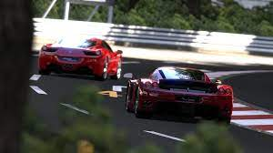

Gran Turismo serisinin 5. oyunudur. Oyun, Polyphony Digital tarafından geliştirilmiş ve Sony Computer Entertainment tarafından yayınlanmış olup PlayStation 3 için 24 Kasım 2010 tarihinde piyasaya sürülmüştür.[2][1] GT5, 2013 yılı itibarıyla 10 milyon kopyası ile birlikte en çok satan PS3 oyunlarından biridir.
Oyunda, Dünya Ralli Şampiyonası, NASCAR ve Super GT lisansları Gran Turismo serisinde ilk defa kullanılmaktadır.
Gran Turismo 5'te toplam olarak 1,088 araç[7] ile 26 farklı yer ve 71 farklı pist bulunmaktadır.[8] Oyunda araçlar "standart" ve "premium" olarak gruplandırılmış olup premium araçlar daha ayrıntılıdır. Oyunda gece sürüşleri, karting yarışları ve pist düzenlemeleri yapılabilmektedir.[9] Oyuncu tek oyuncu modunda kazandığı yarışmalardan deneyim puanı almaktadır ve A-Spec veya B-Spec düzeyi yükselmektedir.